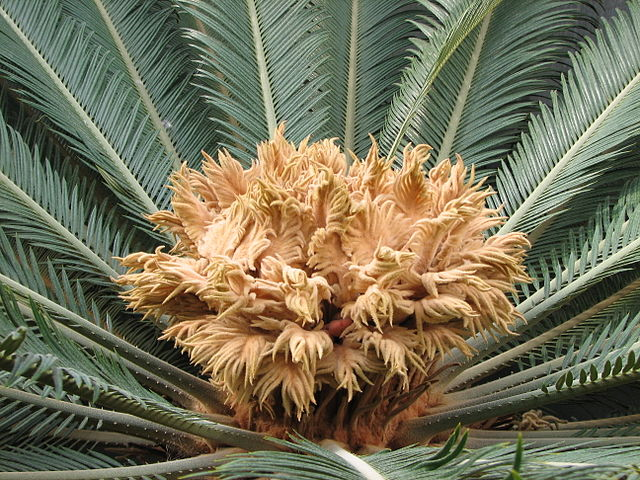
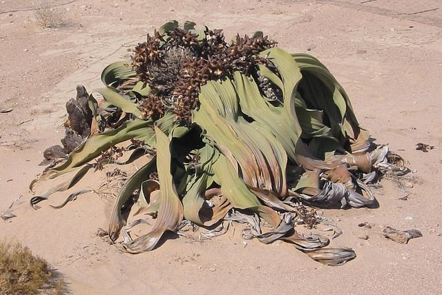

Plantas Gimnosperms |
Las gimnospermas son plantas cuya importancia a nivel evolutivo es grandiosa. Son organismos que hacen algo que no hacen las plantas más primitivas: producir semillas. |
|---|

Familia Cycadidae |

Familia Gnetidae |
|---|